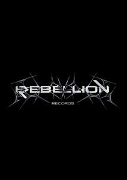

Trade Mark Journal No.2025/018 2 May 2025
UK00004176977 20 March 2025 (9,16,35,41)

- Class 9
- Downloadable music sound recordings; Downloadable digital music; Downloadable video recordings featuring music; Downloadable music files; Downloadable musical sound recordings; Digital music downloadable from the Internet; Musical recordings; Musical cassettes.
- Class 16
- Event programs; Event albums; Souvenir event programs; Printed event admission tickets; Events programmes; Events albums.
- Class 35
- Merchandising; Promotion [advertising] of concerts; Promotion of musical concerts; Event marketing; Promotion of special events; Arranging and conducting of promotional events; Conducting of commercial events.
- Class 41
- Special event planning; Organization of entertainment events; Ticketing and event booking services; Dance events; Organisation of musical events; Organising events for entertainment purposes; Conducting of live entertainment events; Disc jockeys for parties and special events; Ticket reservation and booking services for entertainment events; Disc jockey services for parties and special events; Musical events (Arranging of -); Arranging of musical events; Booking of performing artists for events (services of a promoter); Arranging and conducting of live entertainment events; Arranging and conducting of entertainment events; Entertainment services in the nature of organizing social entertainment events; Music concerts; Music publishing and music recording services; Music performances; Production of music concerts; Presentation of music concerts; Live music concerts; Performance of music; Production of music; Music production; Music concert services; Music publishing; Publishing of music; Organisation of music concerts; Music festival services; Live music performances; Publication of music; Arranging of music performances; Music composition services; Direction of music performances; Composition of music for others; Music composition for others; Music recording studio services; Live music services; Music mixing services; Live music shows; Production of music shows; Arranging of music shows; Music library services; Music group services; Music performance services; Music production services; Music publishing services; Musical entertainment; Arranging and conducting of music concerts; Live musical concerts; Presentation of musical concerts; Musical concert services; Arranging of musical entertainment; Production of musical recordings.
REBELLION RECORDS LTD